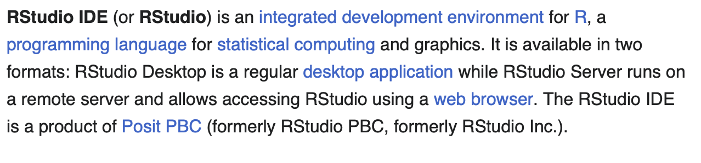
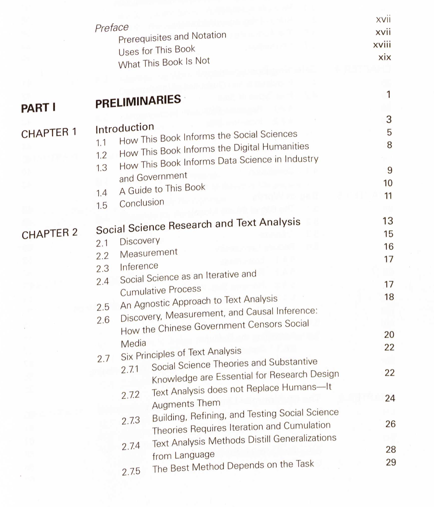

Chapter 10: OCR with tesseract
This chapter demonstrates how you can read images and PDF documents into R in an automated fashion. Note that OCR is not always perfect and you might have to do some significant pre- and/or post-processing. I have included some classic pre-processing commands from the magick package, post-processing will usually be conducted using RegExes.
Install tesseract and download language packages
Before we can start OCRing images, we need to install tesseract via the command line. The reason for this is that the R package merely binds to the engine, but the OCRing happens “under the hood.” You can find instructions on how to install tesseract for your respective operating system here.
Once successfully installed, we can just load the package. In order to get the best results, we need to define the language our text is in. Multiple options are available (for a list of languages, see this website) and can be downloaded using tesseract::tesseract_download() (for Mac and Windows users).
needs(tesseract)
english <- tesseract("eng") # use English model
tesseract_download("deu") # download German language modelTraining data already exists. Overwriting /Users/felixlennert/Library/Application Support/tesseract5/tessdata/deu.traineddata[1] "/Users/felixlennert/Library/Application Support/tesseract5/tessdata/deu.traineddata"tesseract_info()[["available"]] # check available languages[1] "deu" "eng" "osd" "snum"OCR 101
Once the package and the language module is installed, you can start OCRing. For illustration purposes, we OCR the first paragraph of the RStudio Wikipedia article:

ocr("figures/rstudio_wiki.png", engine = english)[1] "RStudio IDE (or RStudio) is an integrated development environment for R, a\nprogramming language for statistical computing and graphics. It is available in two\nformats: RStudio Desktop is a regular desktop application while RStudio Server runs on\na remote server and allows accessing RStudio using a web browser. The RStudio IDE\nis a product of Posit PBC (formerly RStudio PBC, formerly RStudio Inc.).\n"Note that there are still line breaks in there. We can easily replace them with whitespace them using stringr::str_replace_all(). Make sure to remove redundant whitespaces using stringr::str_squish()
needs(tidyverse)
ocr("figures/rstudio_wiki.png", engine = english) |>
str_replace_all("\\n", " ") |>
str_squish()[1] "RStudio IDE (or RStudio) is an integrated development environment for R, a programming language for statistical computing and graphics. It is available in two formats: RStudio Desktop is a regular desktop application while RStudio Server runs on a remote server and allows accessing RStudio using a web browser. The RStudio IDE is a product of Posit PBC (formerly RStudio PBC, formerly RStudio Inc.)."If we want deeper insights to the confidence tesseract has in its word guesses, use tesseract::ocr_data().
ocr_data("figures/rstudio_wiki.png", engine = english)# A tibble: 63 × 3
word confidence bbox
<chr> <dbl> <chr>
1 RStudio 91.8 14,18,134,43
2 IDE 96.6 145,19,196,42
3 (or 93.3 207,18,245,49
4 RStudio) 92.9 256,18,385,49
5 is 96.3 397,19,418,43
6 an 96.3 429,24,461,43
7 integrated 96.5 474,18,612,49
8 development 93.7 624,18,806,49
9 environment 96.5 816,19,991,43
10 for 93.2 1001,18,1038,43
# ℹ 53 more rowsAdvanced OCR with magick preprocessing
This worked quite well. One reason for this is that screenshots from the internet are usually very “clean.” However, often this is not the case, especially with book scans. There might be some noise/speckles in the image, some skewed text, etc. In our next example, we OCR the first page of the “Text As Data” book and preprocess it with magick (find instructions for magick here)

ocr("figures/tad_toc.png") |>
cat()Preface i
Prerequisites and Notation xvll
Uses for This Book wl
What This Book Is Not —
PART |! PRELIMINARIES 1
CHAPTER 1 Introduction 3
1.1. How This Book Informs the Social Sciences 5
1.2. How This Book Informs the Digital Humanities 8
1.3 How This Book Informs Data Science in Industry
and Government
1.4 AGuide to This Book 2
1.5 Conclusion *
CHAPTER 2 Social Science Research and Text Analysis 13
2.1 Discovery
2.2 Measurement 18
2.3. Inference ae
2.4 Social Science as an Iterative and W
Cumulative Process
2.5 An Agnostic Approach to Text Analysis
2.6 Discovery, Measurement, and Causal Inference:
How the Chinese Government Censors Social
Media 20
2.7 Six Principles of Text Analysis 22
2.71 Social Science Theories and Substantive
Knowledge are Essential for Research Design 22
2.7.2 Text Analysis does not Replace Humans—lt
Augments Them 24
273 Building, Refining, and Testing Social Science
Theories Requires Iteration and Cumulation 26
2.74 Text Analysis Methods Distill Generalizations
from Language 28
2.75 The Best Method Depends on the Task 29As we can see, there are a couple of problems – some page numbers are not detected correctly, some typos, etc. Perhaps, some manual image pre-processing can help here.
needs(magick)
image_read("figures/tad_toc.png") |>
image_resize("90%") |> # play around with this parameter
image_rotate(degrees = 3) |> #straighten picture
image_contrast(sharpen = 100) |> # increases contrast
image_convert(type = "Grayscale") |> # black and white
image_trim() |> #trim image to remove margins
ocr() |>
cat()Preface xvii
Prerequisites and Notation xvii
Uses for This Book xviii
What This Book Is Not min
PARTI PRELIMINARIES 1
CHAPTER 1 Introduction 3
1.1. How This Book Informs the Social Sciences 5
1.2 How This Book Informs the Digital Humanities 8
1.3. How This Book Informs Data Science in Industry
and Government 9
1.4 A Guide to This Book 10
1.5 Conclusion n
CHAPTER 2 __ Social Science Research and Text Analysis 13
2.1 Discovery 15
2.2 Measurement 16
2.3 Inference 17
2.4 Social Science as an Iterative and
Cumulative Process 7
2.5 An Agnostic Approach to Text Analysis 18
2.6 Discovery, Measurement, and Causal Inference:
How the Chinese Government Censors Social
Media 20
2.7 Six Principles of Text Analysis 22
2.71 Social Science Theories and Substantive
Knowledge are Essential for Research Design 22)
2.72 Text Analysis does not Replace Humans—It
Augments Them 24
2.73 Building, Refining, and Testing Social Science
Theories Requires Iteration and Cumulation 26
2.74 Text Analysis Methods Distill Generalizations
from Language 28
2.75 The Best Method Depends on the Task 29Slight improvements! Still not perfect, but OCR hardly ever is.
Read PDFs
If we want to read PDFs, we can also harness the power of tesseract in combination with magick and pdftools. In this example, I ocr a multi-page PDF document containing newspaper articles.
needs(pdftools)
german <- tesseract(language = "deu")
texts <- map(1:pdf_info("figures/snippet_dereko.pdf")$pages,
\(x) {
pdf_render_page("figures/snippet_dereko.pdf", page = x, dpi = 300) |>
image_read() |> # Convert raw image to magick image object
ocr(engine = german) # OCR
}) |>
reduce(c)
texts |> str_sub(1, 1000) |> cat()© Leibniz-Institut für Deutsche Sprache, Mannheim
COSMAS II-Server, C2API-Version 4.23.8 - 21.11.2023
glemm - a German lemmatizer, version R-2.4.4, 04.07.2022 by Cyril Belica
Datum : Montag, den A. Dezember 2023, 20:20:01
Archiv : W - Archiv der geschriebenen Sprache
Korpus : D-Korpora - Korpora aus Deutschland
Archiv-Release: Deutsches Referenzkorpus DeRekKo-2023-I
Suchanfrage : (((nakba or (unabhängi* or staatsgründung)) and
(palästin* or israel*)) and 1948)
Suchoptionen : Ei+tRi+Di, Flex
Ergebnis : 4.231 Treffer
Belege (unsortiert)
Anz. Treffer ı 4.231
Anz. exportierte Belege: 4.231
Angezeigter Kontext : 0 Absätze links, © Absätze rechts
Kontext umschließt : gesamten Treffer
Wie nirgends sonst ist im Heiligen Land die Kartografie eine Teildisziplin der Politik. Wer zwischen Israelis und Palästinensern pendelt, wird
von beiden Seiten mit oft höchst unterschiedlichen Landkarten ausgestattet: Hier ist von Jerusalem, dort von Al-Quds die Rede, mal fehlen
Grenzlinien, mal liegen sie woan bewusst als Veranstaltungsort gewählt worden. Bundesweit soll auf über 500 Veranstaltungen die Staatsgründung gefeiert werden.
(HAZ08/FEB.05113 Hannoversche Allgemeine, 27.02.2008, S. 2; Festakt zu Ehren Israels)
Geburt einer nation 60 jahre Israel
P
1. Aufbruch nach Palästina — Die Vorgeschichte des Neuanfangs
2. Staatsgründung 1948 - Die Probleme einer neuen Existenz
(HAZ08/MA1.00830 Hannoversche Allgemeine, 06.05.2008, S. 5;)
Zu Besuch bei den Kibbuzniks — den wichtigsten Pionieren in Israels Gründerzeit
Von Dirk Schmaler
« Schluchot. Es sieht so aus, als sei er schon immer da gewesen. Der Stamm des riesigen Eukalyptusbaums ist mächtig und ragt mindestens
20 Meter in den hellblauen Himmel. „Als wir den Kibbuz gründeten, haben wir als erstes diesen Baum gepflanzt, es war unser erstes Baby“,
sagt Uri Landau und klopft auf das trockene Holz. Sie haben viel gemeinsam, der 80-jährige Mann mit dem sonnengegerbten Gesicht und
dieser australische Eukalyptusbaum, der in der Siedlung Das Auto hält sich an die religiösen Regeln am Shabbat, an dem keine Arbeit getan, kein Lichtschalter betätigt und kein Wagen gefahren
werden soll. Der uralte Volvo von Rose Bilbool springt nicht an. Doch bei der 86 Jahre alten, energischen Dame hat ein unwilliges Vehikel
keine Chance. Mechaniker Ahmed wird gerufen, er setzt das Auto in Gang und Rose Bilbool fährt nach Jericho.
Jerusalem wirkt am Shabbat wie eine verlassene Museums-Stadt. Der dunkle Teppich auf dem Hügel voraus ist der Ölberg, in der Ferne tupft
die Kuppel des Felsendoms einen goldenen Fleck in den Himmel. Die weißen Sandstein-Fassaden der Häuser sind heute so ziemlich das
einzige Band, das den Osten und Westen der Stadt verbindet. (B98/FEB.12407 Berliner Zeitung, 27.02.1998; Vom Kommen und Bleiben
[S. I)
Mit der Verlesung der Unabhängigkeitserklärung durch David Ben-Gurion 1948 wird die Vision der Zionisten Realität
Julius H. Schoeps
Zwischen dem Baseler Kongreß 1897 und der Gründung des Staates Israel liegt ein h (B98/MA1.29532 Berliner Zeitung, 15.05.1998; PALÄSTINA [S. 6])
Israelis und Palästinenser erinnern sich an 1948
Inge Günther
Leicht sind sie zu übersehen, die Überreste jener arabischen Dörfer und Städte im israelischen Kernland, die für die Palästinenser el-Nakba
markieren, ihre große Katastrophe. Oft ist nicht mehr als ein von Kakteen überwucherter Steinhaufen übriggeblieben. Wie zum Beispiel von
Beit Nuba, das 1948 von der Haganah niedergemacht wurde — dem jüdischen Widerstand, der nach der Staatsgründung die offizielle Armee
stellte. Beit Nuba lag an der im Teilungsplan festgelegten grünen Linie und zudem, wie zahlreiche andere Orte, im strategisch wichtigen und
deshalb so heftig umkämpften Westkorridor nach Jerusalem.
Selbst Saleh Abdel Jawad, Direktor des historischen Dokumentationszentrums an der palästinensischen Birzeit-Universität, hat Mühe, die
Stelle genau zu lokalisieren. (B98/JUL.40972 Berliner Zeitung, 01.07.1998; Die Grautöne der Wahrheit treten hervor [S. 13])
AlsEasy!
Further links
Exercises
In general, you could try all the rvest exercises with selenium to see how these things differ. Also every page is different, therefore it will probably be best if you just start with your own things. However, here is a quite tricky example.
- Take a screenshot of a page of your liking and OCR it. Post-process.
Solution. Click to expand!
ocr("figures/rstudio_wiki.png", engine = english) |>
str_replace_all("\\n", " ") |>
str_squish()- OCR a PDF document you have available (e.g., one of the course readings). If you get the error “Image too small to scale,” you can use
magick::image_resize().
Solution. Click to expand!
texts <- map(1:3,
\(x) {
pdf_render_page("figures/Stoltz:Taylor 2020.pdf", page = x, dpi = 300) |>
image_read() |> # Convert raw image to magick image object
image_resize("300%") |>
ocr(engine = english) # OCR
}) |>
reduce(c)References
Grimmer, Justin, Margaret Roberts, and Brandon Stewart. 2022. Text as Data: A New Framework for Machine Learning and the Social Sciences. Princeton: Princeton University Press.